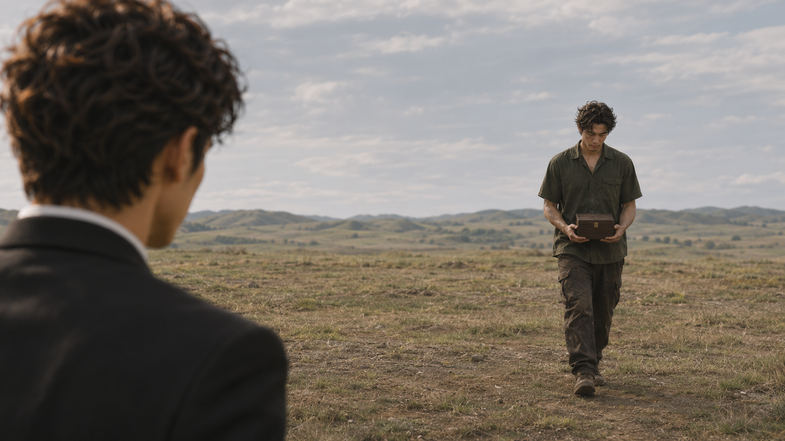
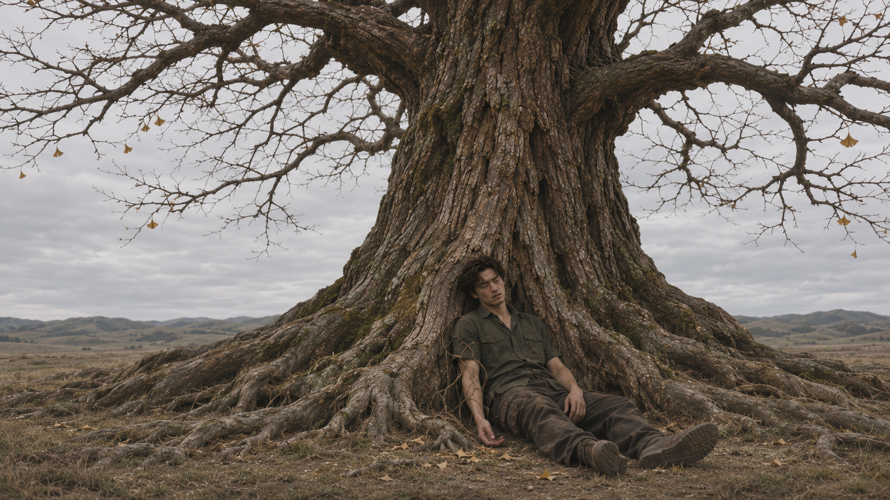
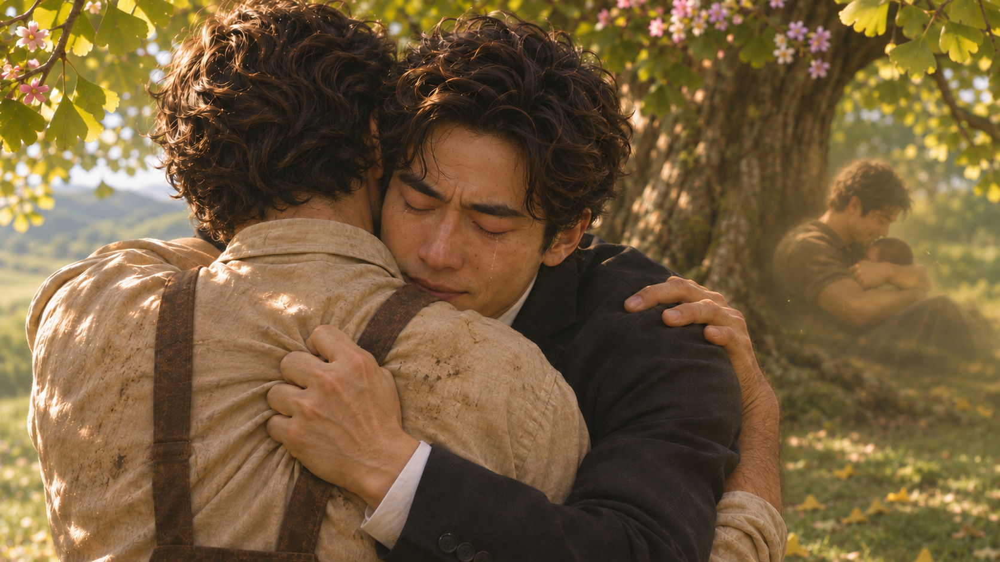
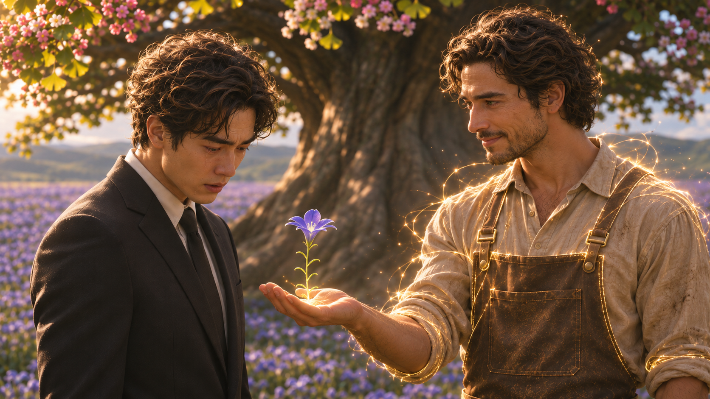
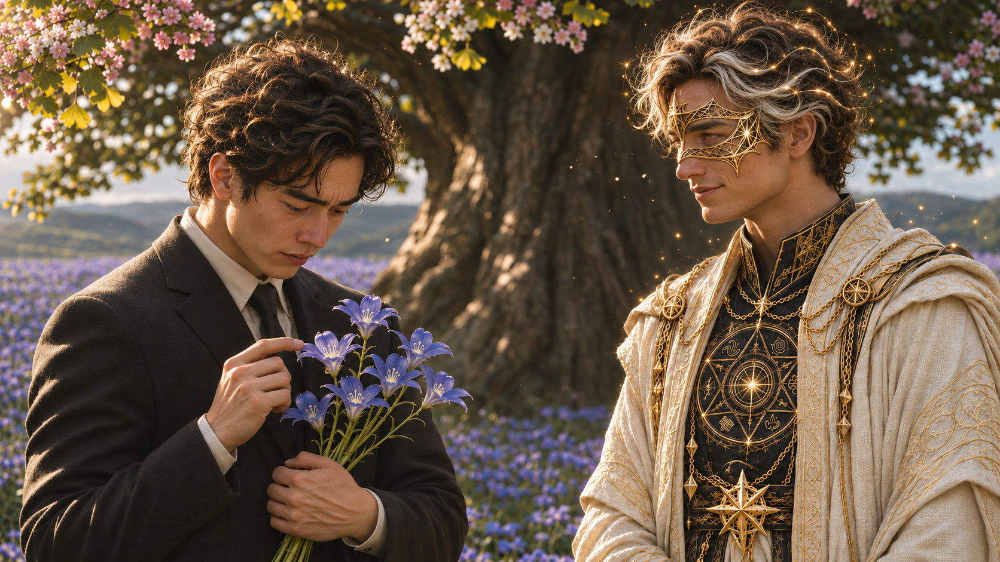
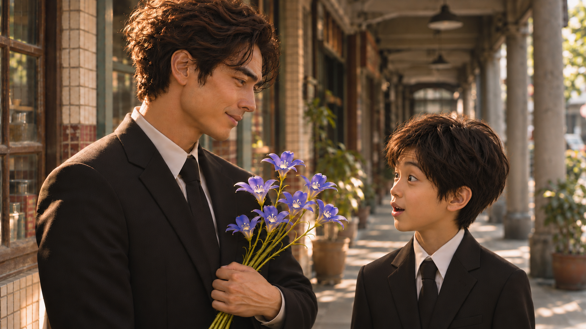
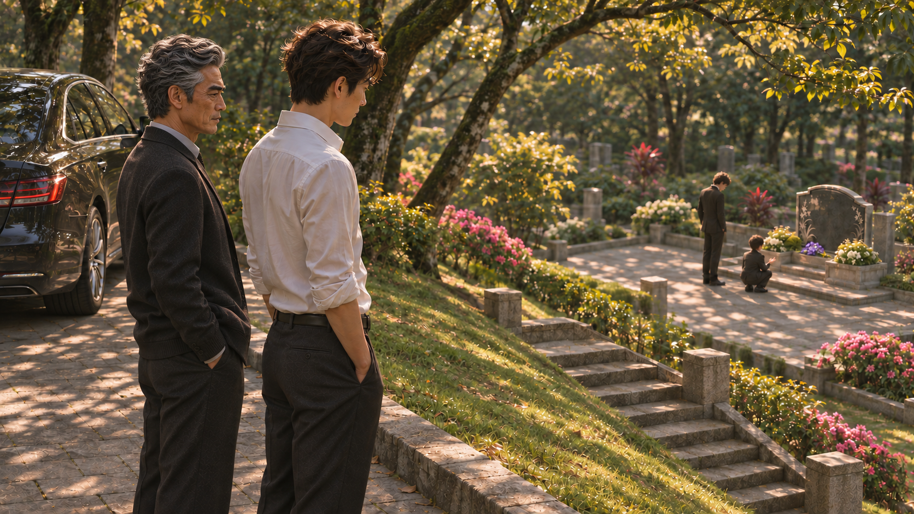

WHITE MAGIC ART STUDIO
最終章
返鄉
景皓眼前的景色漸漸清晰。
原本開滿繁花的銀杏樹消失了。
取而代之的，是一片荒涼而寂靜的土地。
沒有花朵，也沒有茂密的枝葉。只有風吹過草地時，發出的細微聲響。
景皓認得這個地方。
他甚至記得，當年站在這裡時，空氣裡是什麼味道。
「這是……」
話還沒說完，一個熟悉的身影便出現在不遠處。
景皓愣住。
那是十年前的自己。
年輕了許多，卻也憔悴得讓人幾乎認不出來。
那時的他臉色蒼白，眼下帶著深深的疲倦，身上的衣服皺得不成樣子。
他低著頭，雙手小心翼翼地抱著一個盒子，緩緩走進這片土地。
景皓看著那個身影，喉嚨忽然有些發緊。

「……我記得這一天。」
拉比站在他身旁，沒有說話。
過去的景皓在一處空地前蹲下，打開盒子。
裡面保存著一個極其微小的生命起點——那是他從瑞雯體內取得的受精卵。
他按照文祿當年教給他的方法，小心地將其安置在預備好的土壤中。
接著，他從口袋裡取出幾顆銀杏種子，撒在周圍。
雙掌貼地。
翠綠色的聖術紋路，沿著他的指尖向四周擴散。
下一瞬間，土地微微震動。
一根細小的嫩芽破土而出。
它迅速抽長，長出枝條、樹葉，逐漸形成一棵高大的銀杏樹。
景皓看著眼前的景象，輕聲說：
「那時候……我真的以為這樣就能成功。」
他苦笑了一下。
「文祿告訴我，只要讓孕胎樹吸收足夠的生命力，就有可能孕育出新的生命。」
拉比望著那棵樹。
「所以，你把自己的生命交給了它。」
景皓沒有回答。
因為眼前的自己，已經開始了下一個動作。
過去的景皓緩緩坐到樹下，背靠著粗壯的樹幹。
他抬起手。
幾根細長的樹根從土壤中伸出，沿著他的手臂攀附而上。
接著，根尖緩緩刺入他的身體。
「呃……！」
過去的景皓痛得渾身一顫。
他的手指緊緊抓住身旁的泥土，額頭冒出冷汗。
然而，他沒有停止。
更多樹根纏繞上來，將他的生命力一點一滴地送入樹中。
現在的景皓下意識地握緊拳頭。
那種疼痛，他至今仍記得。
不只是身體被抽走力量的痛。
還有那時候，心裡幾乎什麼都不剩的感覺。
「我當時……」
景皓低聲開口。
「其實也沒有自信它會成功。」
拉比轉頭看向他。
「嗯。」
「我只是覺得……」
景皓望著樹下的自己。
「如果最後真的能留下什麼，好像也不錯。」
他停了一下。
「至少，不會什麼都沒有。」
拉比沒有接話。
只是伸出手，輕輕一揮。
眼前的景象開始流動。
日升月落。
陽光從樹葉間灑下，又隨著夜幕消失。
雨水落在地面，接著又迎來晴天。
景皓看見自己與孕胎樹相連的日子，在眼前迅速掠過。
那些曾經漫長得彷彿沒有盡頭的時刻，如今被濃縮成一幕幕畫面。
他的臉頰逐漸消瘦。
原本還能勉強睜開的眼睛，漸漸失去了神采。
呼吸越來越微弱，連抬起手指都變得困難。
更令人不安的是——
那棵銀杏樹，也開始枯萎。
原本翠綠的葉片逐漸泛黃。
枝條失去生氣，樹皮乾裂，葉子一片片落下。
直到最後，整棵樹幾乎只剩下光禿禿的枝幹。

景皓怔怔地看著。
「……怎麼會？」
他向前走了幾步。
「我記得那棵樹後來明明……」
話說到一半，他忽然明白了。
「原來……」
景皓的聲音微微顫抖。
「那時候，我真的快死了。」
他望著樹下那個幾乎失去意識的自己。
「而且……光靠我的力量，孕胎樹根本無法成功。」
拉比輕輕點頭。
「是啊。」
景皓轉頭看向祂。
忽然，他意識到一件事。
「等等……老師。」
「嗯？」
「如果我當時已經失去意識……」
景皓望著眼前的畫面。
「那您現在給我看的這段記憶……究竟是誰的？」
拉比微微一笑。
「是我的記憶。」
景皓怔住。
「……您的？」
「嗯。」
拉比望向那棵幾乎枯死的銀杏樹。
「因為那一天，我也在這裡。」
拉比一說完便走進這段記憶中，
祂抬起右手，輕輕攏住一縷風。
掌心裡，浮現出一點柔和的白光。
祂將手移到唇邊，輕輕吹了一口氣。
那點白光隨風飄起，在空中舒展成一隻小小的飛鳥。
牠全身由純白的光羽構成，像鴿子一樣輕盈，翅膀邊緣散落著細緻的金色光點。
牠在空中盤旋了一圈。
最後，停在那棵幾乎枯死的銀杏樹上。
景皓屏住呼吸。
飛鳥低下頭，輕輕碰了碰乾枯的枝條。
一點白光，從牠停留的地方緩緩亮起。
接著，沿著枝幹向四周蔓延。
像是一道溫暖的水流，悄悄流進了整棵樹。
乾裂的樹皮開始恢復光澤。
枯萎的枝條重新抽出嫩芽。
一片。
兩片。
越來越多翠綠的葉子，在陽光下舒展開來。
原本幾乎死去的銀杏樹，竟然重新活了過來。
景皓睜大雙眼。
「老師……」
他轉頭看向身旁的拉比。
「這是……您做的？」
拉比望著那棵樹，輕輕一笑。
還沒來得及回答——
「哇——！」
一聲嬰兒的啼哭，忽然從樹幹深處傳來。
景皓整個人僵住。
那個聲音……
「哇——哇——！」
他不可能忘記。
十年來，他聽過無數次昱鎧的哭聲。
有生病時難受的哭聲，有跌倒時委屈的哭聲，也有小時候半夜醒來、非要他抱著才肯安靜下來的哭聲。
可是這一聲……
是第一次。
是那個孩子來到世界上時，發出的第一個聲音。
「昱鎧……」
景皓的眼眶瞬間紅了。
畫面中的自己，也被那聲哭泣驚醒。
過去的景皓吃力地睜開眼睛。
他愣愣地望著前方。
「……什麼？」
哭聲再次傳來。
他扶著樹幹，幾乎是跌跌撞撞地站起身。
那些原本纏繞著他的樹根，已經悄然鬆開。
他循著聲音，來到樹幹中央的一處樹洞前。
然後，緩緩伸出手。
樹洞裡，躺著一個小小的嬰兒。
那孩子微微蜷縮著身體，閉著眼睛，正用盡力氣哭泣。
過去的景皓怔住了。
他似乎連呼吸都忘了。
好一會兒，才小心翼翼地伸出雙手。
「……嘿。」
他的聲音沙啞得幾乎聽不清楚。
「小傢伙……」
他輕輕抱起那個孩子。
動作生疏得不像話。
一隻手托著嬰兒的後腦，另一隻手緊張地扶住小小的身體。
「噓……噓……」
他試著安撫。
「沒事……沒事了……」
可是孩子仍然哭個不停。
過去的景皓有些慌張。
「欸……等一下……」
他低頭看著懷裡的小生命。
「你先不要哭……我、我第一次抱小孩……」
話還沒說完，他自己反而笑了。
那是一個很輕、很疲憊的笑容。
卻是這段回憶裡，他第一次真正笑出來。
現在的景皓站在不遠處，靜靜看著這一幕。
他記得那時候的自己有多狼狽。
卻已經很久沒有想起，當初抱著昱鎧時，心裡究竟是什麼感覺。
過去的景皓低下頭。
小小的嬰兒在他懷裡動了動。
他看著那張皺巴巴的小臉，忽然伸出手指，輕輕碰了碰孩子的臉頰。
「你好啊……」
他輕聲說。
「我是……」
話說到一半，他停住了。
像是直到這一刻，才真正意識到自己懷裡抱著的是誰。
他深吸一口氣。
「我是爸爸。」
聲音很輕。
卻讓現在的景皓再也忍不住眼淚。
因為他知道。
從那一刻開始，他再也不是一個人了。
孩子仍在哭。
過去的景皓抱著他，緩緩坐回樹下。
「怎麼辦……」
他低聲笑著。
「我也不知道怎麼讓你不哭耶……」
他想了一會兒。
忽然，輕輕哼起一段旋律。
那是一首很久以前，母親慧萍曾經唱給他聽的詩歌。
小時候，每當他難過、害怕，或是夜裡睡不著時，母親總會坐在床邊，輕輕唱起這首歌。
如今，他竟然在這裡，對著自己的孩子唱了起來。
歌聲有些沙啞。
音準也不太穩。
「在綻放...的光芒...」
唱到一半，他甚至忘了幾句歌詞，只能用哼唱接下去。
可是懷裡的孩子，竟然漸漸安靜下來。
過去的景皓低頭一看。
那雙小小的眼睛，正望著他。
「……你喜歡啊？」
他笑了。
「這首歌是阿嬤教我的喔。」
說完，他的笑容忽然停了一下。
「你還沒見過她……」
他輕輕摸了摸孩子的頭。
「她是個很溫柔的人。」
聲音開始顫抖。
「如果她還在……」
他沒有把話說完。
一滴眼淚，落在孩子的衣襟上。
接著，又是一滴。
「……對不起。」
過去的景皓低下頭。
「我好像……還不太會當爸爸。」
他努力笑著，眼淚卻越掉越多。
「可是我會學。」
他將孩子抱得更穩了一些。
「我會好好照顧你的。」
說完，他低下頭，輕輕碰了碰孩子的額頭。
「所以……」
「你要陪我一起長大，好不好？」
孩子伸出小小的手，碰到了他的下巴。
那一瞬間，過去的景皓終於忍不住哭了。
他抱著昱鎧，一邊流淚，一邊繼續哼唱母親教他的旋律。
直到歌聲與哭聲漸漸混在一起。
現在的景皓站在原地，久久沒有說話。
他看著十年前的自己。
看著那個曾經以為人生已經走到盡頭的年輕人。
原來，在他幾乎放棄所有希望的那一天……
他第一次成為了父親。
而且，第一次那麼真切地想要活下去。
「老師……」
景皓輕聲開口。
拉比站在他身旁，靜靜望著樹下的父子。
「你真的以為……」
拉比緩緩說道。
「你們所謂的禁術，能夠憑自己的力量創造生命嗎？」
景皓沒有回答。
拉比轉頭看向他。
「景皓，生命在於我。」
祂的語氣溫柔，卻十分堅定。
「力量，也在於我。」
景皓望向那個仍抱著孩子的自己。
「所以……」
他慢慢轉過頭。
「原來那天……是您救了我們。」
拉比沒有否認。
景皓低下頭，輕輕笑了一聲。
「我一直以為……是昱鎧救了我。」
他望著樹下的孩子。
「因為從他出生以後，我才開始覺得……自己還有活下去的理由。」
拉比走到他身旁。
「昱鎧確實改變了你的人生。」
祂溫柔地說。
「但景皓，你知道嗎？」
景皓抬起頭。
「在你第一次抱起他之前，我就已經愛著你們兩個了。」
景皓怔住。
拉比輕輕拍了拍他的肩膀。
「其實，我還以為你知道昱鎧也是聖術師的時候，就會慢慢想明白這件事。」
祂故作無奈地笑了笑。
「看來我這個老師，還有很多地方沒教好啊。」
景皓愣了一下。
接著，帶著眼淚笑出了聲。
「……老師。」
「嗯？」
「您真的很會挑時間開玩笑。」
「有嗎？」
拉比笑著反問。
景皓搖了搖頭。
那個熟悉的笑容，讓他想起了許多年前，兩人在家中花園裡聊天的日子。
只是有一件事，他始終沒有真正面對。
拉比似乎也察覺了。
祂轉身望向那棵銀杏樹。
「景皓。」
「……嗯。」
「我知道，你當年為什麼會選擇那個方法。」
景皓的心微微一沉。
「你並不是單純想創造一個生命。」
拉比停了一下。
「你只是覺得，如果能把自己的生命留給另一個人，或許就能替自己找到一個比較能接受的結局。」
景皓垂下眼。
「你一直無法原諒自己沒能救回母親。」
拉比的聲音放得很輕。
「所以你想，如果至少能留下另一個生命……是不是就能讓自己的離開，看起來沒有那麼令人難過？」
景皓的嘴唇微微顫抖。
他沒有回答。
因為拉比說中了。
那時的他，並沒有真正期待自己能活下來。
甚至在得知孕胎樹需要吸收生命力時，他心裡還曾經有過一絲釋然。
他以為，這樣就不必再面對失去母親的痛苦。
拉比沒有繼續追問。
祂只是望著那棵銀杏樹。
「所以，我很喜歡這棵樹。」
景皓抬起頭。
「因為在你以為一切都結束的地方，我讓一個新的故事開始了。」
景皓轉頭看向銀杏樹下的自己。
那個年輕的父親，仍然抱著懷裡的孩子。
他一邊輕聲唱歌，一邊低頭看著那張熟睡的小臉。
景皓看著看著，忽然笑了。
「老師……」
「嗯？」
「昱鎧真的……讓我變得很幸福。」
拉比望著他。
「是嗎？」
景皓用力點頭。
「嗯。」
「雖然有時候真的很煩。」
拉比笑了。
「喔？」
「他小時候很難哄睡，長大以後又一堆問題。」
景皓忍不住笑著搖頭。
「現在還會偷偷把漫畫藏在枕頭底下，以為我不知道。」
拉比聽得津津有味。
「然後呢？」
景皓沉默了一會兒。
他的眼神漸漸柔和下來。
「可是……我真的很喜歡當他的爸爸。」
他望著那棵銀杏樹。
「每天回家都有人等我，吃飯時聽他講學校那些有的沒的。明明已經十歲了，有時候還是會突然跑過來抱我。」
景皓笑了。
這一次，是發自內心的笑容。
「老師，我以前真的沒想過……自己還能過得這麼快樂。」
拉比靜靜望著他。
「那麼，景皓。」
「嗯？」
「現在回頭看看，你覺得那棵樹，真的只留下了你的痛苦嗎？」
景皓望向眼前。
那棵曾經幾乎枯死的銀杏樹，正沐浴在溫暖的陽光下。
樹影裡，年輕的自己抱著剛出生的昱鎧，露出了安心的笑容。
景皓深深吸了一口氣。
「……不是。」
他輕聲回答。
「它也讓我遇見了這輩子，最珍貴的禮物。」
拉比笑了。
「嗯。」
祂望著景皓。
「那現在想想看，為什麼你能在那時召出神癒花？」
景皓閉上眼睛，深深吸了一口氣。
那天的畫面再次浮現在腦海中。
倒在血泊中的父親、景毅覆在自己手背上的雙手，還有那三朵從焦土中綻放的神癒花。
「我當時只知道……只有木翼的力量能救我爸。」
他緩緩睜開眼睛。
「我只希望讓爸知道，我也能成為他的後盾。他不用再獨自承擔所有事情……」
景皓低下頭，輕輕笑了。
「就像昱鎧一直給我力量一樣。」
拉比微笑著點頭。
「然後，你終於活出了木翼真正的意義，召喚出屬於你的術之木——神癒花。」
景皓怔怔地望著祂。
「景皓，你還不明白嗎？」
拉比的聲音溫柔而堅定。
「我不喜悅你曾經做錯的選擇，但那些錯誤，從來不是我放棄你的理由。」
祂輕輕將手放在景皓肩上。
「因為我的能力，正是在人的軟弱上顯得完全。你不需要先成為完美的人，才能承接我給你的愛。」
景皓望著祂。
這一次，他沒有急著低下頭。
「拉比……」
他哽咽著，幾乎說不出完整的話。
「我真的很對不起您……如果我能早一點明白……」
「過去的事情，我們不能當作沒有發生。」
「有些傷害，需要時間修復。」
「有些關係，也需要你慢慢學著重新建立。」
景皓低下頭。
「……嗯。」
「可是今天，我不想讓你只顧著責怪自己。」
拉比向他伸出手。
「因為我很高興。」
景皓抬起眼。
「高興……？」
「嗯。」
「今天我很開心，因為我重新得到了你。」
景皓怔住。
十年前，他曾親口請求拉比離開自己的生命。
他一直以為，是拉比收回了木翼，從此不再需要他。
可如今，他終於明白——
真正轉身離開的人，始終是自己。
而拉比，從來沒有放棄過他。
景皓往前走了一步。
下一秒，他主動伸出雙臂，緊緊抱住拉比。
「而我……也重新得到了祢。」
拉比溫柔地回抱他。
景皓閉上眼睛。
這個擁抱裡，有懊悔，有感謝，也有太多無法用言語說盡的思念。

他想起景毅曾經提醒自己的話。
想起母親過去對他說過的話。
直到這一刻，他才終於明白——
原來，拉比真的一直都在這個家。
從來沒有離開。
「歡迎回家。」
拉比輕輕地說。
眼前的回憶漸漸變淡。
樹下的年輕父親與嬰兒，慢慢融進溫暖的光裡。
銀杏樹重新長出五彩繽紛的花朵。
草原的風，再次輕輕吹過兩人身旁。
景皓抬起頭。
拉比正微笑著看他。
「來吧！」
拉比忽然拍了拍手，笑著轉過身。
「為了紀念我們景皓今天又成長了一步，是時候替這裡做最後的裝飾了！」
景皓還沒從方才的情緒中完全平復，聞言不禁愣了一下。
「……裝飾？」
「嗯！」
拉比環顧四周，像是在尋找靈感。
「讓我想想……還能種些什麼好呢？」
祂思索片刻，忽然轉頭看向景皓。
「你覺得呢？」
「我？」景皓有些措手不及，「呃……如果用薔薇來裝飾，您覺得如何？」
「不不不——」
拉比笑著搖頭。
「這可是個充滿紀念價值的地方，怎麼能只用世上現成的花呢？」
祂抬頭望向那棵巨大的銀杏樹。
「我要在這裡，種下一種這個世界從未出現過的花。」
景皓忍不住笑了。
「老師，您還真有興致。」
「怎麼？我可是一位很有創意的聖術師！」
拉比轉過頭，眼裡帶著幾分笑意。
「而且，剛好可以糾正你們一個常見的誤會。」
「誤會？」
拉比沒有立刻回答。
祂輕輕合攏雙手。
一縷柔和的翠綠色光芒，在掌心緩緩亮起。
光芒之中，一株奇異的植物逐漸成形。葉片柔潤，莖幹纖細而挺立，頂端幾個小小的花苞，正緩緩舒展。
片刻後，花朵綻放。
那是一種景皓從未見過的花。
深邃的靛藍色花瓣，邊緣透著細緻的銀光，美得彷彿是從夜空中摘下的一小片星河。
景皓不自覺地湊近。
「……好漂亮。」
拉比微微一笑。
「你們總說，木之聖術師的術之木不會開花，對吧？」
「恩。」
景皓點頭，隨即想起什麼。
「等等……是因為木翼的術之木是神癒花，所以這個說法才不完全正確嗎？」
「不完全是。」
拉比望著掌心的花朵。
「景皓，重要的不只是你能召喚什麼。」
祂抬起頭。
「還有，你是為了誰而使用這份力量。」
景皓微微一怔。
「術之木能成為武器，也能成為保護自己的盾牌。但它的生命，並不只有這些可能。」
拉比輕輕轉動掌心。
靛藍色的花瓣隨風微微搖曳。
「當你願意為了另一個人，付出自己所擁有的力量時，有些原本不可能的事，也許就會發生。」
景皓望著那朵花。
腦海中，忽然浮現父親倒在戰場上的模樣。

拉比微笑著繼續說：
「就像你為了救父親，召出了三朵神癒花。」
「而他也為了保護你，讓自己的忘憂木開出了花朵。」
景皓低下頭。
他想起那根穿過火焰、努力朝自己伸來的青藍色藤蔓。
還有那幾朵在焦土中綻放的花。
原來，父親當時的心意，竟然也以這樣的方式留了下來。
「至於我呢……」
拉比忽然笑了。
景皓抬起頭。
「嗯？」
就在這時，腳邊的草地微微震動。
景皓低頭一看。
一朵靛藍色的小花，正從土壤裡悄悄探出頭來。
接著是第二朵。
第三朵。
越來越多。
那些花朵沿著草地迅速蔓延，轉眼間，整片草原竟被深淺交錯的靛藍色覆蓋。
微風吹過，無數花瓣輕輕搖曳。
彷彿夜空墜落人間。
景皓後退幾步，怔怔地望著眼前的景象。
「……老師？」
拉比站在花海之中，溫柔地看著他。
「而這，就是我對你的心意。」
景皓的鼻頭忽然一酸。
他望著那片無邊無際的花海，一時間竟不知道該說些什麼。
而當他再次抬起頭時——
拉比的模樣，已悄然改變。
那身樸素的園丁服已經消失，取而代之的是一襲聖潔的純白長袍。
金色半面具覆在祂的上半臉，棕色頭髮中摻雜銀白色的短髮如星河般垂落，在光芒中輕輕飄動。
祂仍帶著熟悉的笑容。
然而那份無法言喻的榮耀，卻讓景皓不由自主地屏住呼吸。
他緩緩跪下，低著頭，不敢直視祂。
拉比走到他面前。
「景皓。」
祂伸出手，輕輕將景皓扶起。
不知何時，祂懷中已多了一束靛藍色的花。
拉比將花束交到景皓手裡。
景皓小心翼翼地接過，低頭望著那一朵朵從未見過的花。
過了好一會兒，他才抬起頭。

「所以……」
他的聲音有些哽咽。
「您今天特地創造了這些花，就只是為了讓我知道，您有多愛我？」
拉比微微一笑。
「而你知道，我能為你做的，還有更多。」
祂輕輕眨了眨眼。
景皓望著祂，終於露出笑容。
「……謝謝您。」
「不客氣。」
拉比忽然又伸出手。
「啊，對了！還有這個。」
景皓低頭一看。
是一小包種子。
「這些也送你。」
拉比笑著說。
「一天澆兩次水就夠了。有陽光的話，最好放在窗邊，會開得更漂亮。」
景皓愣了一下，忍不住笑出聲。
「您的術之木還有種子？」
「當然！不然你要怎麼把它們種到世界各地去？」
拉比回答得理所當然。
「你在這個世界上所看到的每種花朵，都是我的術之木，都是我愛你們的證明。」
景皓笑著點了點頭，將種子小心收好。
接著，他再次低頭看著懷中的花束。
「對了，老師。」
「嗯？」
「那這些花……該叫什麼名字呢？」
拉比嘴角微微揚起。
祂望著景皓，語氣溫柔而篤定。
「慧萍花，怎麼樣？」
景皓怔住。
「……慧萍花？」
「嗯。」
拉比笑了。
「我覺得，是個很棒的名字——對吧？」
景皓低頭望著懷裡的花。
深邃的靛藍色，在陽光下泛著細緻的銀光。
他輕輕撫過花瓣。
「慧萍花啊……」
「哇！好酷喔！」
熟悉的童聲，忽然從身旁響起。
「爸爸，那是你變出來的花嗎？」
景皓微微一怔。
他抬起頭。
眼前已不再是那片無邊無際的草原，而是熟悉的街道。
午後的陽光灑落在騎樓邊。
昱鎧正站在身旁，好奇地望著他懷裡的花束。
景皓低下頭。
那束慧萍花，仍然真實地躺在他的臂彎裡。
他輕輕笑了。

「小鎧。」
「嗯？」
「陪爸爸去一個地方，好不好？」
「去哪裡？」
景皓望著懷裡的花。
「去一個非常重要的地方。」
那是一座寧靜的墓園。
與其說是墓園，倒更像是一座被細心照料的花園。
樹木錯落有致，花草沿著步道生長。微風吹過，枝葉發出細碎的聲響，空氣中帶著淡淡的花香。
景皓知道，這裡的一草一木，都藏著父親對母親的思念。
他牽著昱鎧，沿著熟悉的小徑往前走。
最後，停在一座墓碑前。
照片裡的慧萍，仍然帶著記憶中那個溫柔的笑容。
景皓緩緩蹲下。
他將懷裡的慧萍花輕輕放在墓碑前，仔細整理好花束的位置。
接著，伸出手，輕輕碰了碰照片。
他俯下身，在照片的角落落下一吻。
「媽……」
景皓望著那張熟悉的臉。
「這是我兒子，昱鎧。」
他轉頭看了看身旁的孩子。
「我帶他來看妳了。」
昱鎧望著照片，又看了看爸爸。
接著，他也蹲了下來。
「阿嬤！」
他露出燦爛的笑容。
「我是昱鎧喔！」
景皓微微一怔。
昱鎧望著照片，認真地繼續說：
「謝謝妳生下這麼棒的爸爸給我！」
景皓愣住。
「小鎧……」
但昱鎧已經自顧自地說了下去。
「我跟妳說喔，我爸爸真的很厲害！」
「他很會煮飯，還會做很多神奇的事！」
昱鎧伸出手指，開始一件一件數著。
「而且他很會照顧人。雖然有時候會一直叫我不要看漫畫，還會唸我房間太亂……」
景皓忍不住笑了。
「喂，這個就不用特別講了吧？」
昱鎧回頭看了他一眼。
「可是這也是爸爸啊！」
說完，又轉回去繼續對著照片說話。
「還有還有，阿嬤，我跟妳說……」
孩子的聲音，在寧靜的墓園裡輕輕迴盪。
他說著學校發生的趣事，說著爸爸做過的料理，還有那些連景皓自己都不記得的小事。
彷彿不是第一次見面。
而是在向一位久違的家人，分享這十年來的生活。
景皓站在兒子身後，靜靜聽著。
他原本還帶著笑容。
可是不知道從哪一句話開始，眼前的景象漸漸模糊了。
他想起母親當年坐在床邊，輕輕為自己唱歌的模樣。
想起十年前，自己抱著剛出生的昱鎧，也唱起了同一首歌。
如今，那個曾經被自己小心翼翼抱在懷裡的孩子，已經能站在母親的墓前，笑著告訴她——
她的兒子，是一個很棒的爸爸。
景皓緩緩轉過身。
他抬起手，摀住嘴。
肩膀輕輕顫抖。
這一次，他沒有出聲。
只是任由眼淚，安靜地落下。
身後，昱鎧仍然開心地說著話。
「阿嬤，等一下我再跟妳說一件更厲害的事喔……」
景皓聽著，忍不住在眼淚中笑了。
不遠處，一輛車靜靜停在樹蔭下。
晉輝與景毅站在車邊，遠遠望著墓碑前的父子。
景毅穿著白襯衫，雙手插在口袋裡。
晉輝則始終站著，目光停留在景皓與昱鎧身上。
微風吹起他的衣角。
過了好一會兒，晉輝才輕聲開口。

「武兒……」
「嗯？」
晉輝望著遠方，似乎想說些什麼。
景毅看了他一眼。
接著，又望向墓碑前的哥哥與姪子。
「爸。」
「嗯？」
「讓他們再待一會兒吧。」
晉輝微微一怔。
景毅將目光移開，語氣帶著幾分彆扭。
「……難得他們有這個機會。」
晉輝望著小兒子。
「我是想要跟你說....」
「我知道....我們有的是時間。」
晉輝微微一怔，隨後輕輕笑了。
「嗯。」
「對了，今天晚餐哥說他會煮，你應該會回家吧？」
「當然...」
晉輝笑著回答，眼裡卻泛起了淚光。
景毅沒有再說話。
他轉身坐進駕駛座，雙手輕輕握住方向盤。
透過擋風玻璃，他仍能看見遠處的哥哥與昱鎧。
景毅靜靜望著。
然後，深深吸了一口氣。
那是一個久違的呼吸。
也是一個——
久違的微笑。